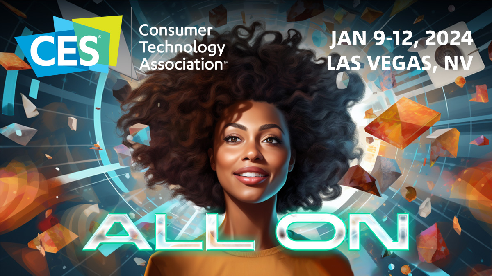

Updated: January 2026
Artificial intelligence dominated CES 2026 more than any other theme. From AI-powered laptops and chips to humanoid robots and generative assistants, nearly every major company positioned AI as the center of its future strategy. Below is a clear breakdown of the most important AI announcements from CES — what was revealed, why it matters, and what trends are emerging.
1) The rise of the “AI PC” becomes official
Every major chipmaker used CES to push the concept of the AI PC — laptops and desktops built around dedicated neural processing units (NPUs). These systems promise faster on-device AI tasks such as transcription, image generation, and background noise removal without relying on the cloud.
Why it matters: AI workloads move closer to users, improving privacy, latency, and battery life.
2) New AI chips target efficiency, not just power
Several new processors focused less on raw performance and more on efficiency per watt. This shift reflects the growing cost of running AI at scale, both in data centers and consumer devices.
Trend: the next generation of AI hardware is optimized for sustained workloads, not just benchmarks.
3) Humanoid robots move closer to real deployment
Multiple companies demonstrated humanoid and service robots capable of warehouse picking, hospitality tasks, and assisted living scenarios. While still expensive, the focus shifted from demos to pilot deployments.
Why it matters: robotics is now tightly coupled with generative AI for perception and decision-making.
4) Generative AI enters consumer electronics
TVs, cars, and home devices now ship with built-in generative assistants. Use cases include automatic video summaries, personalized dashboards, and AI-driven navigation.
5) Enterprise AI shifts toward on-device inference
Several vendors announced tools that allow enterprises to run AI models locally on edge devices. This reduces cloud costs and improves compliance in regulated industries.
6) Security and regulation remain unresolved
Despite the progress, concerns around data privacy, model bias, and regulation were central themes. Most companies acknowledged upcoming compliance challenges as governments accelerate AI regulation.
Final takeaways from CES AI 2026
- AI PCs will become mainstream within 12–18 months.
- Efficiency is now as important as raw AI performance.
- Robotics and generative AI are converging rapidly.
- On-device AI is the next major platform shift.
CES 2026 made one thing clear: artificial intelligence is no longer a feature — it is the foundation of nearly every future product category.